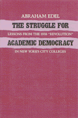

<body bgcolor="#FFFFFF" text="#000000" link="#0000FF" vlink="#CC0000" alink="#CC0000"><center><hr width="350" size="1" align="center" noshade>Evaluates claims for democratic participation in terms of the ultimate mission of the university<hr width="350" size="1" align="center" noshade><p><a href="https://cdcshoppingcart.uchicago.edu/Cart/ChicagoBook.aspx?ISBN=9780877226918&&PRESS=temple" target="_top">Buy this book!</a> | <a href="https://cdcshoppingcart.uchicago.edu/Cart/Cart.aspx?PRESS=temple" target="_top">View Cart</a> | <a href="https://cdcshoppingcart.uchicago.edu/Cart/Cart.aspx?PRESS=temple" target="_top">Check Out</a></p><p></p></center><!--none//--><h1>The Struggle for Academic Democracy</h1>
<H2>Lessons from the 1938 Revolution in New York's City Colleges</H2>
<h3>Abraham Edel</h3>
<P>cloth 0-87722-691-1 $37.50, Jun 90, <FONT COLOR=#990033>Out of Stock Unavailable</FONT>
<br>Electronic Book 1-59213-080-1 $29.00 <FONT COLOR=#990033>Out of Stock Unavailable</FONT>
<BR> 240 pp
</P><p>On June 20,1938, the trustees of the City Colleges of New York changed the by-laws on the governance of the colleges. The transformation of New York City�s colleges from autocratic to democratic rule virtually overnight was a revolutionary event in American higher education within the context of the 1930s. Abraham Edel writes of this revolution as an active participant and as an eminent philosopher who has experienced more than a half century of educational reform. The book focuses on the meaning and import of democratic organization in the governance of universities, but, at the same time, the author�s personal reflections make it an intellectual memoir that charts the evolution of an idea.
<p>Labor unionism, the Great Depression, and the rise of fascism shaped the political, social, economic, and intellectual climate of the 1930s. Edel relates this milieu to the authoritarian system of governance in the City Colleges. He describes the growth of a college teachers union, a sit-down strike by students, and the controversy, agitation, and organizing that hurled the teaching staff into political action. He identifies the pioneering significance of this revolution&#151this experiment in democracy at a time when dictatorship was viewed as more efficient&#151and examines the lessons learned by sudden rather than piecemeal reform, by human responses to institutional change, and by the relation of ideas to social movements.
<p>After tracing the history of this transformation, Edel works toward a philosophy of democratic governance by evaluating the variety of claims for participation in terms of the ultimate mission of the university. Admitting a preference for democratic forms, Edel examines current issues in academic governance and the often acrimonious debate over participation by various groups.
<BR>&nbsp;<H2>About the Author(s)</H2>
<P><b>Abraham Edel</b> is Research Professor of Philosophy, University of Pennsylvania, and Distinguished Professor of Philosophy Emeritus, City University of New York. He has also written <i><a href="586_reg.html" target="_top">Critique of Applied Ethics: Reflections and Recommendations</a></i> (Temple) and <i><a href="636_reg.html" target="_top">Morality, Philosophy, and Practice: Historical and Contemporary Readings and Studies</a></i> (Temple), both with Elizabeth Flower and Finbarr W. O'Connor.</P>
<BR><H2>Subject Categories</H2>
<p><A HREF="/tempress/philosophy.html" TARGET="_top">Philosophy and Ethics</a>
<BR><A HREF="/tempress/education.html" TARGET="_top">Education</a>
</p>
<p align="center"><a href="https://cdcshoppingcart.uchicago.edu/Cart/ChicagoBook.aspx?ISBN=9780877226918&&PRESS=temple" target="_top">Buy this book!</a> | <a href="https://cdcshoppingcart.uchicago.edu/Cart/Cart.aspx?PRESS=temple" target="_top">View Cart</a> | <a href="https://cdcshoppingcart.uchicago.edu/Cart/Cart.aspx?PRESS=temple" target="_top">Check Out</a></p><p><font face="Arial" size="1"><a href="copyright.html" onMouseOver="window.status='Web Copyright Policy';return true;" onMouseOut="window.status=''" title="Web Copyright Policy">&copy;</a> 2015 <a href="http://www.temple.edu" target="new" onMouseOver="window.status='Link to Temple University home page';return true;" onMouseOut="window.status=''" title="Link to Temple University home page">Temple University</a>. All Rights Reserved. http://www.temple.edu/tempress/titles/686_reg.html</font></p>